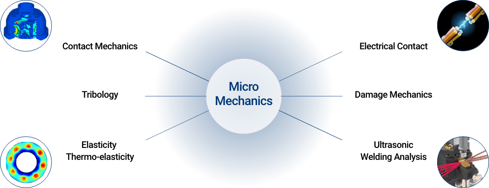
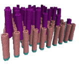
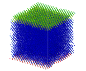
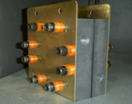

Research Introduction

마이크로 역학 연구실에서는
나노/마이크로 스케일에서 발생하는 역학적인 거동에 초점을
두고 있습니다. 관련 학문 분야로서 접촉역학(Contact Mechanics),
전기 접촉(Electrical Contact),
탄성학/열탄성학(Elasticity/Thermoelasticity),
마찰마멸공학(Tribology), 손상역학(Damage Mechanics)그리고 초음파
용접해석(Ultrasonic Welding Analysis)등이 그 세부 구조를 이루고
있습니다.


Carbon Nano Tube

Molecular Dynamics
Conductive Velcro

Fuel Cell
현재 마찰 및 마모, 조립 및 접합과 관련한 일련의 연구들을 관련
기업과 수행 중이며, 이를 응용한 새로운 마이크로 접합재료를 개발 중
입니다. 구체적인 응용 재료로서는 탄소나노튜브와 전도성 벨크로 등이
있습니다. 또한 재료 내의 균열면에서 발생하는 접촉거동을 응용한
손상역학에 대해서도 연구를 수행 중에 있습니다.주된 응용분야로는
전기 및 수소 자동차 부품, 전기 커넥터, 수송장치 부품 등이
있습니다.